Chapter 1Welcome to Socius
Socius is a free research workbench for sociologists. It runs in your web browser. You can open SPSS files, run the statistics you know from SPSS, and code interviews and open-ended survey answers, all in one place.
This guide is for you if you are new to Socius, and also if you are new to statistics software. It takes you step by step from opening a file to a finished results section. Every example uses a practice survey that comes with Socius, so you can follow along on your own computer.
Who Socius is for
- Students writing a dissertation or a methods assignment.
- Researchers who analyse survey data and interviews.
- SPSS users who want the same menus and tables without a licence. The Data View, Variable View, dialogs and output tables look and work much like SPSS.
What it costs
Nothing. Socius is free to use. There is no account, no sign-up and no trial period.
Your data stays on your computer
Socius runs entirely inside your browser. When you open a file, it is read on your computer and is never uploaded anywhere. Socius keeps a copy of your current work in the browser so it is there when you come back, but that copy lives only in this browser on this computer. To keep your work safe, save a project file (see Saving and sharing your work).
The one exception is the optional AI help. It is off until you set it up, and it never sends anything until you click a button or ask a question. Each AI feature tells you what it will send, and to whom, before it does (see Getting help from AI).
What you need
- A computer with a recent version of Chrome, Edge, Firefox or Safari.
- An internet connection to open the Socius page. After that, your data does not travel anywhere.
- A mouse or trackpad and a keyboard. Socius opens on tablets and phones, which is fine for looking at results, but a computer is much easier for real work.
To start, open Socius at https://hackhead95.github.io/socius/. You can come back to this guide at any time from Help then User guide.
Chapter 2A five-minute tour
When you open Socius for the first time, you see the welcome screen. It offers four ways to start: open your own data file, open a project you saved before, load the sample survey, or type data into an empty dataset.
{kind=link}
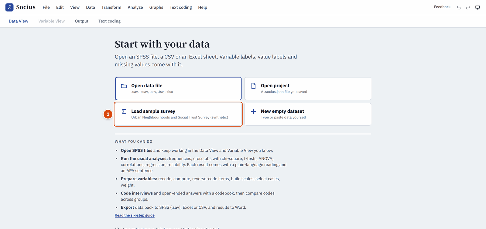
Click Load sample survey now. The practice data opens, and you see the main screen.
{kind=link}
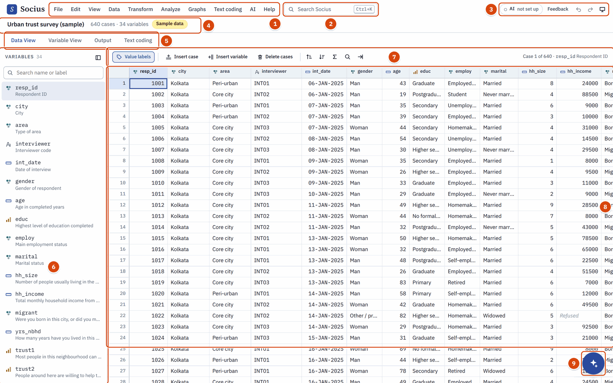
The numbers in the picture show the parts of the screen:
- Menu bar. Everything Socius can do is in these menus: File, Edit, View, Data, Transform, Analyze, Graphs, Text coding, AI and Help.
- Search. Type what you are looking for, such as "chi square" or a variable name, and Socius finds the menu item, variable, result or help page (see Finding anything with Search).
- AI, Feedback, Undo, Redo and theme. The AI chip shows whether AI help is set up ("not set up" until you choose an option). Feedback opens a form to tell us about a problem. Undo and Redo reverse your last changes. The last button switches between light and dark colours.
- Dataset bar. The name of the open dataset, how many cases (rows) and variables (columns) it has, and small labels that tell you when a weight or a filter is switched on.
- Main tabs. Data View shows the data, one row per respondent. Variable View describes the variables. Output collects your results. Text coding is where you code interviews and open-ended answers.
- Variable list. All your variables with their labels. Type in the search box to find one quickly. View then Variable list hides and shows it.
- Toolbar. Buttons for the current tab. In Data View you can switch between codes and value labels, add cases or variables, sort, and search.
- Data grid. The data itself. Each row is a case (usually a respondent) and each column is a variable (usually a question).
- Assistant button. Opens the Socius assistant, which answers questions about your data and methods once AI help is set up (see The Socius assistant).
The sample survey
The practice data is the "Urban Neighbourhoods and Social Trust Survey": 640 households in Kolkata, Delhi, Mumbai, Bengaluru and Chennai. It is invented for teaching, so no real person is described. You can load it again at any time with File then Load sample survey.
These are the variables this guide uses:
| Variable | What it is |
|---|---|
gender | 1 = Man, 2 = Woman, 3 = Other / prefer to self-describe |
age | Age in years (17 people did not give their age) |
educ | Highest education, from 1 = No formal schooling to 6 = Postgraduate |
migrant | 0 = Born in this city, 1 = Moved here from another state or district |
yrs_nbhd | Years lived in this neighbourhood |
trust1 to trust5 | Five statements about trust in the neighbourhood, from 1 = Strongly disagree to 5 = Strongly agree |
life_sat | Life satisfaction, from 0 to 10 |
vote | Voted in the last municipal election (0 = No, 1 = Yes) |
wt | A survey weight |
q_challenge | Open question: "What is the biggest challenge facing your neighbourhood today?" |
Chapter 3Finding anything with Search
You do not need to remember where things are in the menus. Search finds commands, variables, results and help pages for you.
Open Search
- Press Ctrl+K (Cmd+K on a Mac), from anywhere in Socius.
- Or press / when you are not typing in a box or in the Data View grid.
- Or click the Search Socius box in the top bar. On a narrow screen it becomes a magnifying-glass button, and on a phone the search opens full screen.
Start typing. Use the arrow keys to move through the results, Enter to open one and Esc to close Search. Small typing mistakes are fine: "crostabs" still finds Crosstabs.
{kind=link}
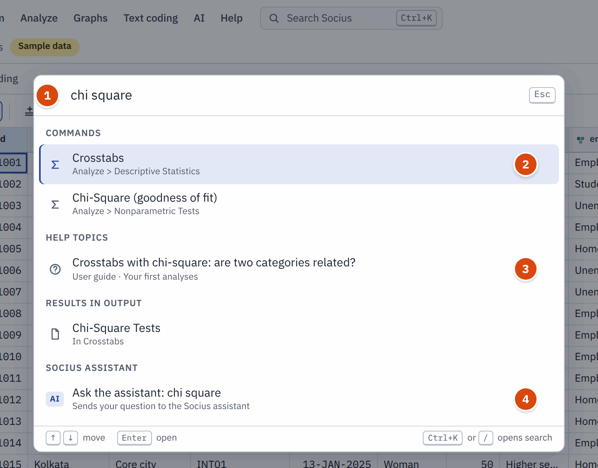
What you can search for
| Type this | What you get |
|---|---|
| chi square | Crosstabs (under Analyze > Descriptive Statistics). Enter opens the dialog. |
| t test, anova, regression, alpha | The matching analysis. "alpha" or "reliability" finds Reliability Analysis. |
| recode, weight, filter | The matching Transform or Data command. |
| trust | Your variables whose name, label or value labels contain "trust". Enter selects its column in Data View; the Variable View and Frequencies buttons on each row open it there or in Frequencies. |
| the title of a result, such as Crosstabs | Results in Output: jumps to that result. |
| missing values | Help topics: opens this guide at that section, in a new tab. |
| a word from your interviews, such as water | Once you have texts in Text coding: Search in texts for "water" lists every passage that contains it (Keyword in context). |
| any question | Ask the assistant: ... (always the last line) sends your question to the Socius assistant. |
With an empty box, Search shows Recent (what you opened from Search lately) and Suggestions. Commands that cannot run yet are greyed out and say why, for example "Open or create a dataset first".
Chapter 4Opening your data
Open an SPSS file
- Choose File then Open data file (or press Ctrl+O, Cmd+O on a Mac). You can also drag the file from your computer onto the Socius window.
- Pick your
.savfile (or a compressed.zsavfile) and click Open. - A short message tells you how many cases and variables were read.
{kind=link}
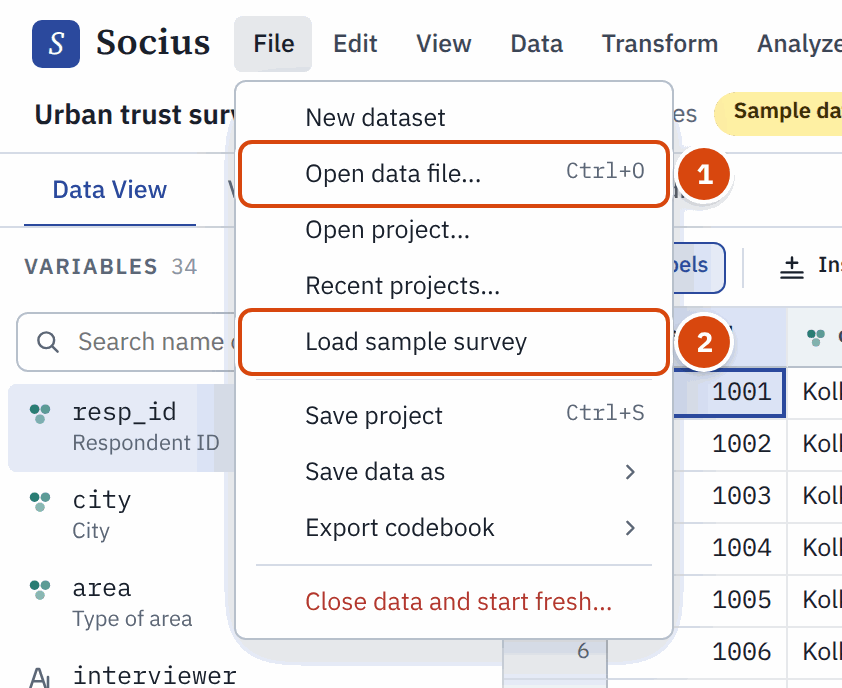
Everything that makes an SPSS file useful comes with it: variable labels (the full question text), value labels (for example 1 = Man, 2 = Woman), missing value codes, measurement levels and the weight variable.
Open a CSV or Excel file
Socius also opens CSV files (.csv, .tsv) and Excel workbooks (.xlsx). Use the same File then Open data file. Before the data opens, Socius shows a preview so you can check that the columns are split correctly.
{kind=link}
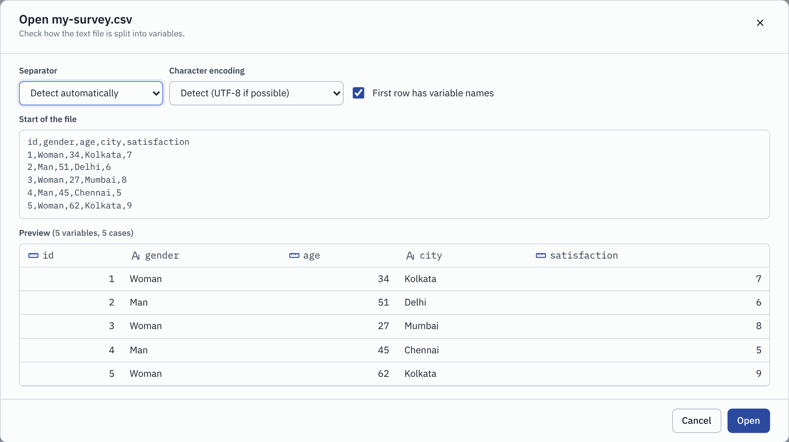
- Separator: leave it on Detect automatically unless the preview looks wrong.
- Character encoding: if letters look strange (for example in Hindi, Bengali or accented names), try another encoding here.
- First row has variable names: keep this ticked if your first row holds column headings.
- For Excel files, you also choose which sheet to open.
CSV and Excel files do not store labels or missing value codes. After opening one, spend a few minutes in Variable View to add them (see the next chapter). If a column holds words, such as "Woman" and "Man", Transform then Automatic recode turns it into numbered categories with value labels, which is what most analyses need.
Chapter 5Understanding your variables
Before you analyse anything, spend five minutes in Variable View. It prevents many wrong results later. Click the Variable View tab.
{kind=link}
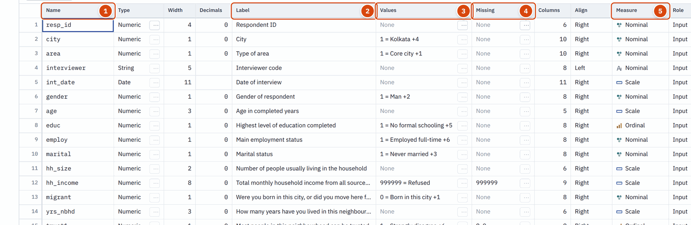
The most important columns are:
- Name. A short name used in menus and output, such as
life_sat. - Label. The full description, often the question wording. Socius shows labels in dialogs and tables.
- Values. Value labels: what each code means, such as 1 = Man.
- Missing. Codes that mean "no real answer", such as 8 = Don't know or 9 = Refused.
- Measure. The measurement level: nominal, ordinal or scale.
Value labels
Click a cell in the Values column and then the small ... button (or press Enter) to see or edit the value labels.
{kind=link}
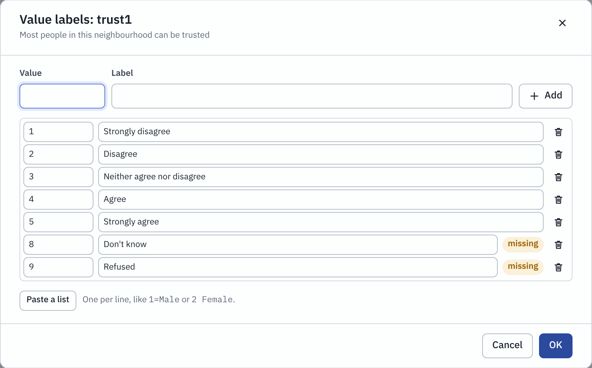
To add a label, type the value and the label at the top and click Add. Paste a list lets you paste many labels at once, one per line, such as 1=Strongly disagree.
Missing values
Surveys often use special codes for "Don't know" or "Refused". If you declare them as missing, Socius leaves them out of every percentage, mean and test. If you forget, a code like 9 would be treated as a real answer and pull your averages up.
Click a cell in the Missing column and then its ... button.
{kind=link}
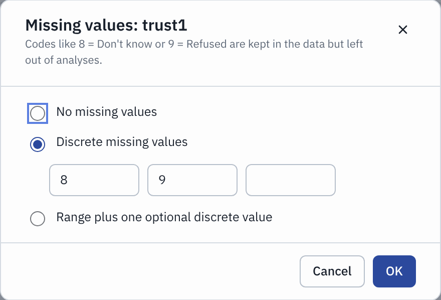
You can choose No missing values, Discrete missing values (up to three codes, such as 8 and 9), or Range plus one optional discrete value (for example 90 to 99).
Measurement level: nominal, ordinal or scale
The measurement level tells Socius what kind of information a variable holds. Socius uses it to suggest suitable analyses and to warn you when a variable does not fit a box in a dialog.
- Nominal: categories with no order. Examples: gender, city, religion. You can count them, but "more" or "less" makes no sense.
- Ordinal: categories with a clear order, but the steps are not necessarily equal. Examples: education level, "Strongly disagree" to "Strongly agree".
- Scale: real numbers where differences are meaningful. Examples: age in years, income, a 0 to 10 satisfaction score.
Small icons next to each variable show its level: a cluster of circles for nominal, rising bars for ordinal and a ruler for scale. To change a level, click the Measure cell and pick another.
Chapter 6Preparing your data
Real data rarely arrives ready to analyse. The Transform and Data menus help you reshape it. Each example here uses the sample survey. Every change is written to the Output tab together with the SPSS command that does the same thing, and Edit then Undo (Ctrl+Z) reverses it.
Recode age into groups
Goal: a new variable agegrp with four age groups, keeping the original age.
- Choose Transform then Recode into different variables.
- Tick
agein the list on the left. - Under New variables, type the name
agegrpand the labelAge group. - Add the rules on the right, one at a time. For each rule, choose the kind of old value, type the numbers, type the new value and click Add:
- System- or user-missing becomes System-missing (so missing ages stay missing)
- Lowest through 29 becomes 1
- Range 30 to 44 becomes 2
- Range 45 to 64 becomes 3
- through Highest 65 becomes 4
- Under Labels for the new codes, type 18-29, 30-44, 45-64 and 65 and over.
- Click OK.
{kind=link}
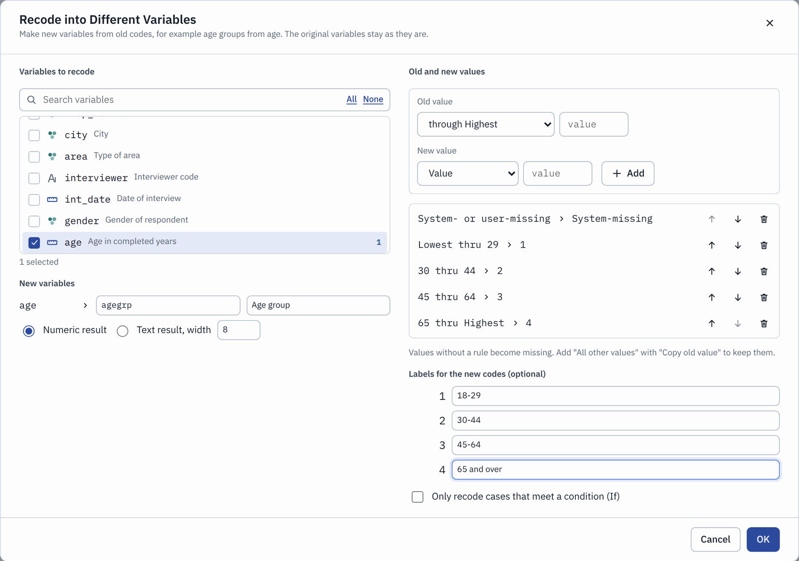
The new variable appears at the end of your data. Values without a rule become missing, so check that your rules cover every age.
Reverse-code a question
Four of the trust statements are positive ("Most people in this neighbourhood can be trusted"). One is negative: trust3 says "You have to be very careful with people in this neighbourhood". Agreeing with it means less trust. Before you combine the five items, flip trust3 so that a high score always means more trust.
- Choose Transform then Reverse-code items.
- Tick
trust3. Socius reads the answer scale (1 to 5) from the value labels. - Keep Create new variables, named with the suffix
_rand click OK.
You now have trust3_r. Its value labels are flipped too, and the missing codes 8 and 9 stay as they are.
Build a scale and check Cronbach's alpha
A scale (or index) combines several questions about the same idea into one score. It is usually more reliable than any single question.
- Choose Transform then Create scale / index.
- Tick
trust1,trust2,trust3_r,trust4andtrust5. Usetrust3_r, nottrust3. - Type the name
trustand the labelNeighbourhood trust (mean of 5 items). - Keep Mean of the answered items. The score then stays on the familiar 1 to 5 scale.
- Minimum answered items is 4: a person who answered fewer than four of the five gets no score.
- Click OK.
{kind=link}
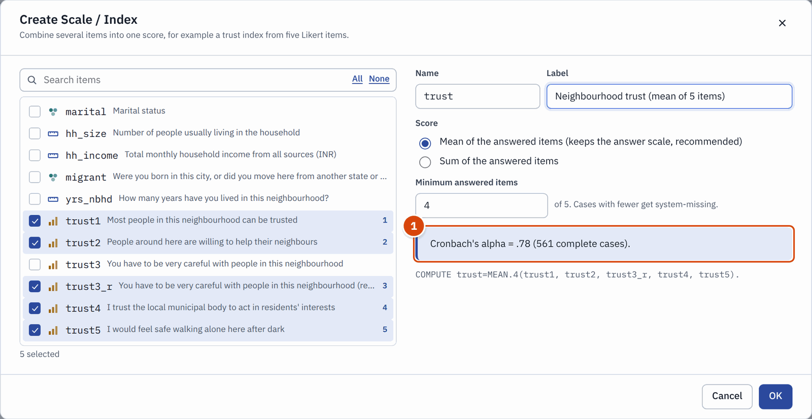
What Cronbach's alpha means. Alpha tells you how well the items hang together, that is, whether people who agree with one tend to agree with the others. It runs from 0 to 1. As a rough guide, .70 or higher is acceptable for a research scale and .80 or higher is good. Here alpha is .78, so the five items form an acceptable scale. If you had used the original trust3 by mistake, alpha would drop and Socius would warn you that the item "goes against the other items".
For the full picture, run Analyze then Scale then Reliability Analysis with the same five items.
Select cases
Sometimes you want to analyse only part of your sample, for example only women aged 30 and over.
- Choose Data then Select cases.
- Choose Cases that meet a condition and type the condition:
gender = 2 AND age >= 30. - Keep Filtered out for unselected cases. They stay in the file but are left out of analyses.
- Click OK.
{kind=link}
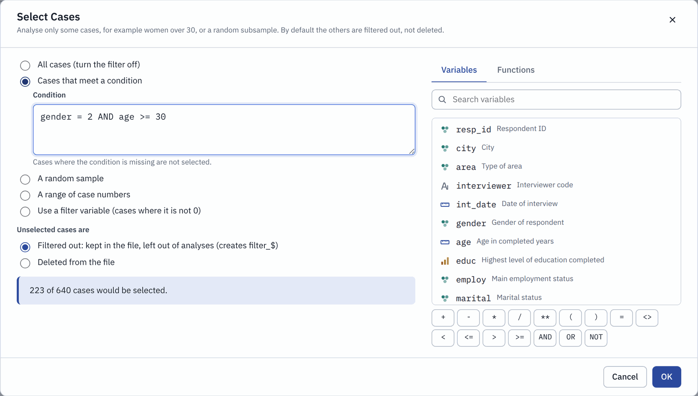
While a filter is on, the dataset bar shows Filter on with the number of cases in use. To use everyone again, choose Data then Turn filter off (use all cases), or click the small cross on that label.
Weight cases
Many surveys come with a weight that corrects for how the sample was drawn. The sample survey has one called wt.
- Choose Data then Weight cases.
- Choose Weight cases by and pick
wt. - Click OK.
The dataset bar now says Weighted by wt, and every analysis uses the weight until you switch it off with Data then Turn weighting off (or the cross on the label).
{kind=link}
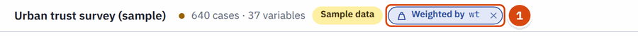
Chapter 7Your first analyses
All analyses live in the Analyze menu, and they all work the same way:
- Pick an analysis from the menu. A dialog opens.
- Move variables from the list on the left into the boxes on the right. Double-click a variable, drag it, or select it and click the arrow.
- Check the options below the boxes, if you need to.
- Click Run. The result appears in the Output tab.
Every analysis dialog has a When to use this link at the top that explains in plain words what the analysis is for.
Every result comes with two extra boxes. What this means explains the result in plain language, to help you read it. APA-style report gives you a draft sentence for your results section, written in the style of the American Psychological Association (APA 7), which most sociology journals and departments accept.
Frequencies: how often does each answer occur?
When to use it. To describe one variable at a time: how many people gave each answer, and what percentage that is. It is usually the first thing you run on any survey.
Try it. How educated is the sample?
- Choose Analyze then Descriptive Statistics then Frequencies.
- Find
educin the list (1) and move it into Variable(s) (3) with the arrow (2). - Click Run (4).
{kind=link}
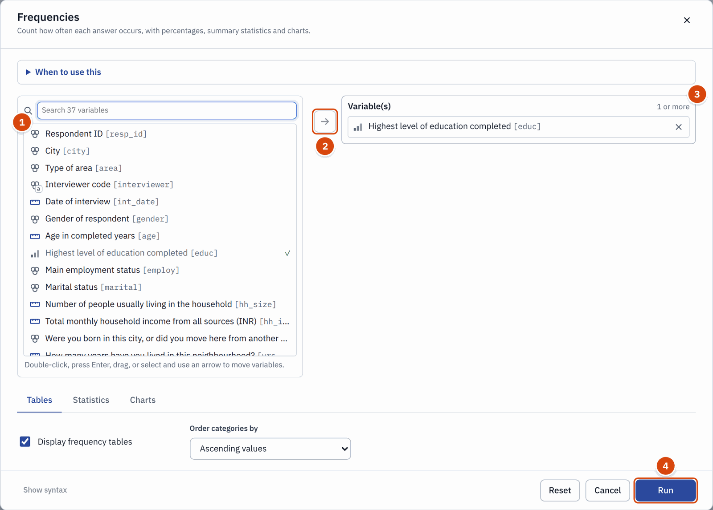
{kind=link}
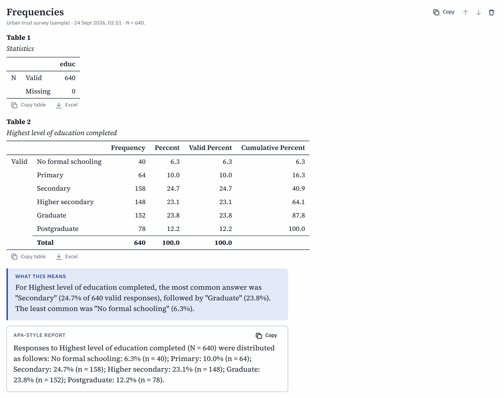
How to read it.
- Frequency is the number of people who gave each answer.
- Percent is the share of all cases, including missing ones.
- Valid Percent leaves out missing answers. This is usually the number to report.
- Cumulative Percent adds the valid percentages up as you go down the table. Here 40.9% have secondary education or less.
The most common answer is "Secondary" (24.7%), and the least common is "No formal schooling" (6.3%).
Crosstabs with chi-square: are two categories related?
When to use it. When both variables are categories (nominal or ordinal), and you want to know whether they are related. For example: do women and men feel equally safe in their neighbourhood?
Try it. Does the feeling of safety after dark differ by gender?
- Choose Analyze then Descriptive Statistics then Crosstabs.
- Put
genderin Row(s) andtrust5("I would feel safe walking alone here after dark") in Column(s). - On the Cells tab, keep Row percentages ticked. Put the variable that defines your groups in the rows; then each row adds up to 100% and you compare rows.
- On the Statistics tab, Chi-square and Phi and Cramer's V are already ticked.
- Click Run.
{kind=link}
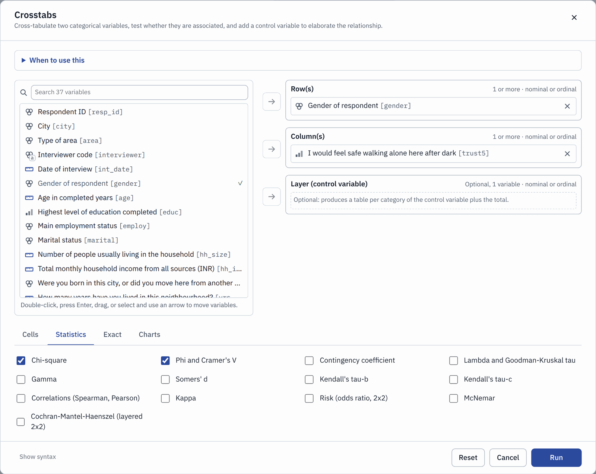
{kind=link}
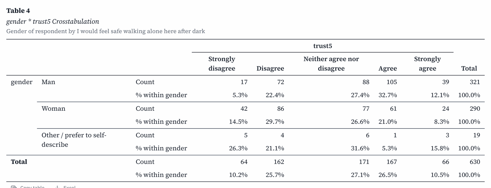
How to read the table. Compare the percentages across each row. Among men, 32.7% agree and 12.1% strongly agree that they feel safe after dark: 44.8% in total. Among women the total is 29.3% (21.0% plus 8.3%). Women are also more likely to strongly disagree (14.5% against 5.3% of men).
{kind=link}
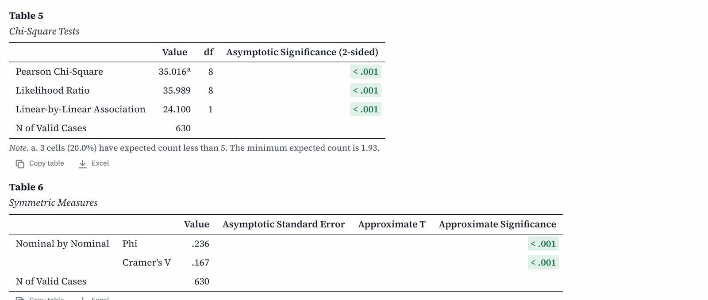
How to read the test.
- Pearson Chi-Square asks: could a difference this large appear by chance if gender and feeling safe were unrelated? The p-value (in the "Significance" column) answers it. Here p < .001, far below the usual .05 limit, so the difference is very unlikely to be chance. We call it statistically significant.
- Cramer's V tells you how strong the relationship is, from 0 (none) to 1 (perfect). As a rough guide, .10 is weak, .30 moderate and .50 strong. Here V = .17: a real but weak relationship.
- The note under the table warns you if many cells have very few people ("expected count less than 5"). If more than 20% of cells are affected, the test becomes unreliable; merge small categories or use the Exact tab.
{kind=link}
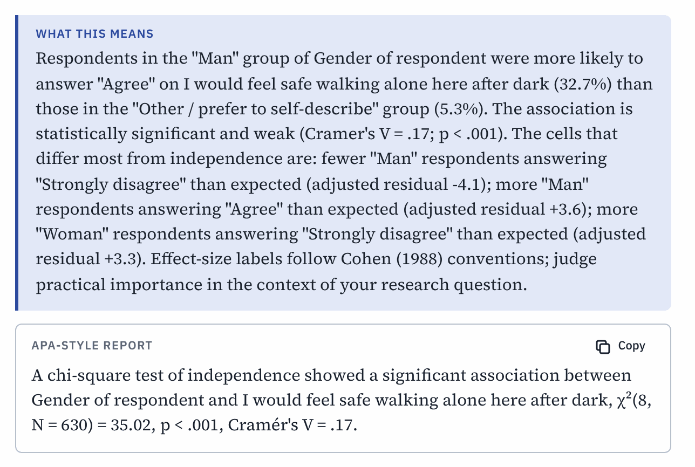
Click Copy in the APA box to copy the sentence. Before you paste it into your paper, replace the long question wording with a short description, and put the statistical symbols (χ², N, p, V) in italics.
Comparing two groups: the independent-samples t-test
When to use it. When you compare the average of a scale variable between exactly two groups. For example: are people who were born in the city more satisfied with life than people who moved there?
Try it.
- Choose Analyze then Compare Means then Independent-Samples T Test.
- Put
life_satin Test Variable(s) andmigrantin Grouping Variable. - Under Groups, Socius fills in the two values of
migrant: "Born in this city (0)" and "Migrated from another state or district (1)". - Click Run.
{kind=link}
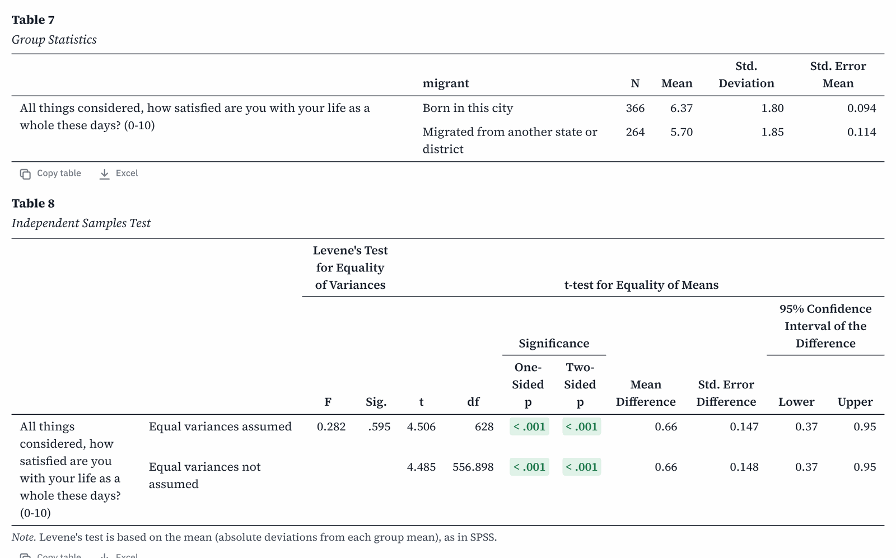
How to read it.
- Group Statistics shows the mean (average) for each group. People born in the city score 6.37 on average; migrants score 5.70.
- Levene's Test checks whether the two groups are equally spread out. If its "Sig." is above .05 (here .595), read the row Equal variances assumed. If it is below .05, read Equal variances not assumed. The plain-language box tells you which row to read.
- t, df and Two-Sided p give the test. Here t(628) = 4.51, p < .001: the difference is statistically significant.
- Cohen's d (in the effect sizes table) tells you how big the difference is: about 0.2 is small, 0.5 medium and 0.8 large. Here d = 0.36, a small to medium difference.
Comparing several groups: one-way ANOVA
When to use it. Like the t-test, but for three or more groups. For example: does life satisfaction differ by level of education?
Try it.
- Choose Analyze then Compare Means then One-Way ANOVA.
- Put
life_satin Dependent List andeducin Factor. - On the Post hoc tab, tick Tukey. This compares every pair of groups.
- Click Run.
{kind=link}
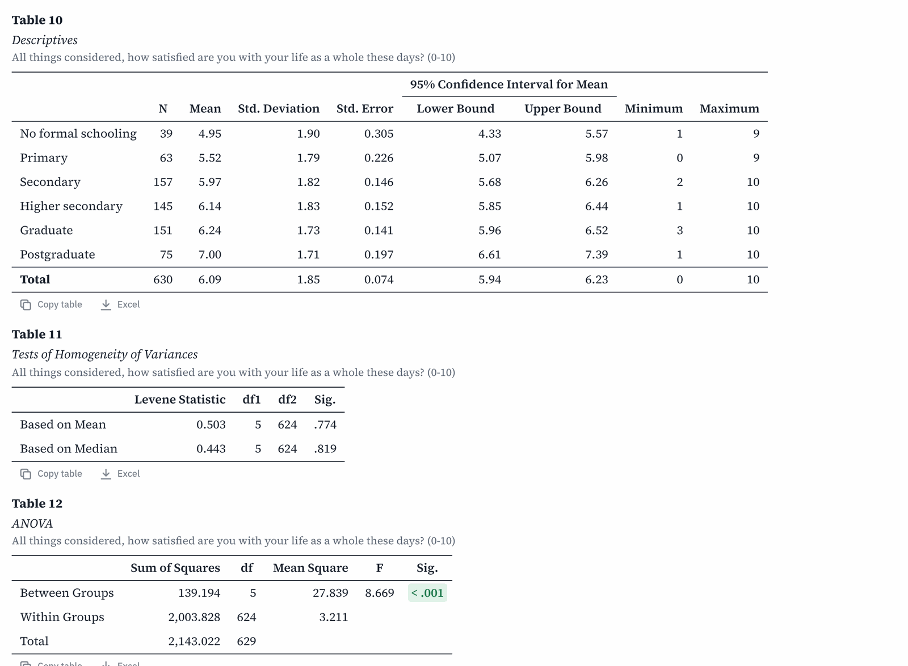
How to read it.
- Descriptives lists the mean for each group. Life satisfaction rises with education, from 4.95 (no formal schooling) to 7.00 (postgraduate).
- ANOVA tests whether any of the group means differ. Here F(5, 624) = 8.67, p < .001, so they do. It does not say which groups differ.
- ANOVA Effect Sizes gives eta squared (η²): the share of the differences in life satisfaction that education accounts for. Here η² = .065, about 6.5%. As a rough guide, .01 is small, .06 medium and .14 large.
- Multiple Comparisons (the Tukey test) shows every pair of groups. A star (*) marks pairs that differ significantly, for example postgraduates and graduates.
- If Levene's test is significant (below .05), the groups are unequally spread. Then rely on the Welch test and choose Games-Howell instead of Tukey.
Correlation: do two numbers move together?
When to use it. When both variables are scale (or ordinal) and you want to know whether higher values of one go with higher (or lower) values of the other.
Try it. Choose Analyze then Correlate then Bivariate Correlations, move age, yrs_nbhd, life_sat and trust (the scale you built) into Variables, and click Run.
{kind=link}
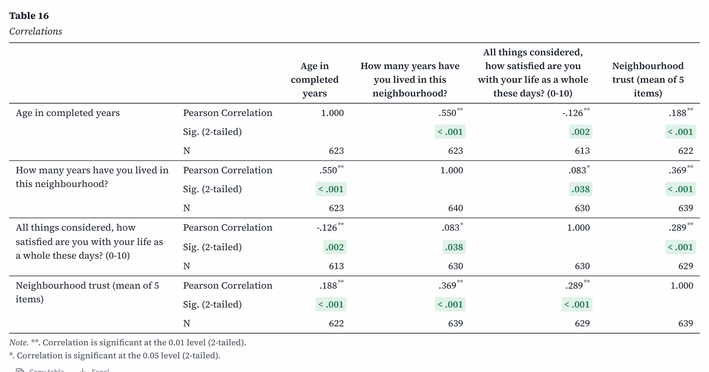
How to read it. Each cell pairs two variables. The Pearson Correlation (r) runs from -1 to +1:
- A positive r means both rise together; a negative r means one rises as the other falls.
- As a rough guide, .10 is weak, .30 moderate and .50 strong.
- Stars mark significant correlations.
Here, people who have lived longer in the neighbourhood trust their neighbours more (r = .37, moderate), and people with more trust are more satisfied with life (r = .29, weak). Remember that a correlation does not show which causes which.
A simple linear regression
When to use it. To predict a scale outcome from one or more other variables, and to see how much the outcome changes for each one-unit change in a predictor.
Try it. How much does life satisfaction rise with neighbourhood trust?
- Choose Analyze then Regression then Linear Regression.
- Put
life_satin Dependent andtrustin Independent(s): Block 1. - Click Run.
{kind=link}
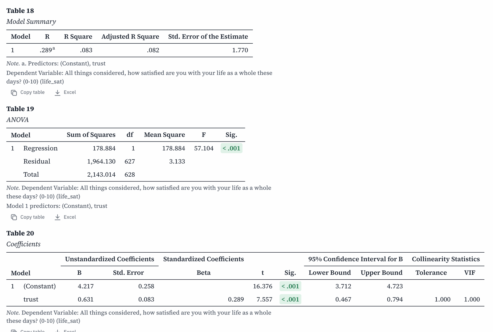
How to read it.
- Model Summary: R Square is the share of the differences in the outcome that the model explains. Here R² = .083: trust explains about 8% of the differences in life satisfaction.
- ANOVA tests the model as a whole. Here it is significant (p < .001).
- Coefficients: B is the key number. For each one-point rise in trust (on its 1 to 5 scale), life satisfaction rises by 0.63 points (on its 0 to 10 scale). The (Constant) is the predicted value when the predictor is zero, and is rarely interpreted.
- Beta is the same effect in standard units, useful for comparing predictors measured in different units.
With one predictor Socius calls it a "simple" linear regression; with two or more, a "multiple" linear regression.
You can add more predictors to Block 1. Categorical predictors such as gender or educ are turned into 0/1 "dummy" variables for you, each compared with the first category.
Where to go next
Once you are comfortable with the analyses above, these are the natural next steps. They work the same way: pick variables, click Run, and read the plain-language box and the APA sentence.
- Binary logistic regression (Analyze then Regression then Binary Logistic Regression) predicts a yes/no outcome, such as whether someone voted. It reports odds ratios.
- Reliability analysis (Analyze then Scale then Reliability Analysis) gives Cronbach's alpha with item statistics, so you can see which question fits a scale worst.
- Factor analysis (Analyze then Dimension Reduction then Factor Analysis) shows which questions group together, for example whether trust items and civic activity items measure two different things.
- Nonparametric tests (Analyze then Nonparametric Tests) such as Mann-Whitney U and Kruskal-Wallis are alternatives to the t-test and ANOVA for ordinal or very skewed data.
Chapter 8Charts
All charts are in the Graphs menu. They appear in Output with a title and the numbers behind them.
A bar chart
Try it. Did the share of voters differ between cities?
- Choose Graphs then Bar Chart.
- Put
cityin Category axis andvotein Cluster by (optional). - Set Bars show to Percent of cases and Percentages within to Each category. Each city's bars then add up to 100%.
- Click Run.
{kind=link}
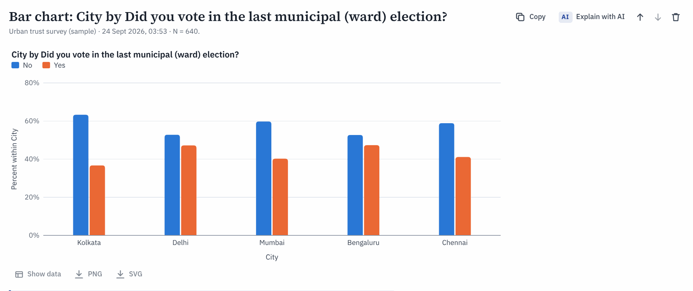
For a single variable, leave Cluster by empty. To compare an average, such as mean trust by city, set Bars show to Mean of a variable and put the scale variable in Variable for means.
A histogram
A histogram shows the shape of a scale variable. Choose Graphs then Histogram, put age in Variable and click Run.
{kind=link}
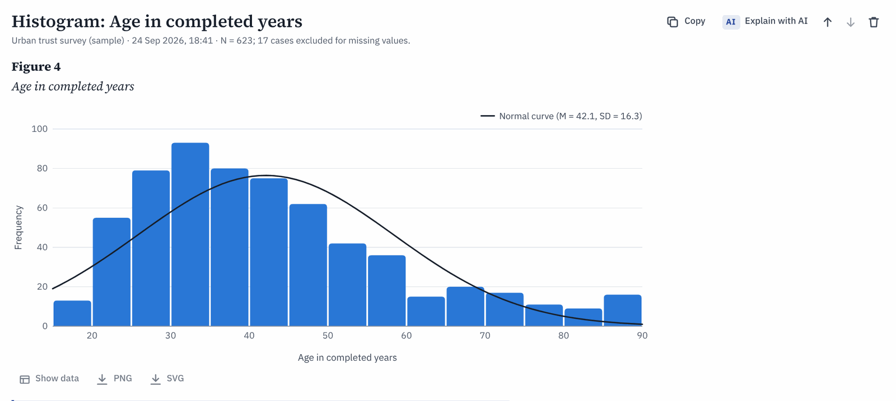
Here the middle half of respondents are between 30 and 51 years old, with a long tail of older people. Socius calls this "right-skewed".
Saving a chart
Under every chart you find three buttons:
- Show data lists the numbers behind the chart.
- PNG saves a picture you can insert in Word or PowerPoint.
- SVG saves a sharp vector version that stays crisp at any size, useful for publications.
Charts are also included when you export the whole report to Word (see the next chapter).
Chapter 9Getting results into your report
Every analysis you run is added to the Output tab, newest at the bottom. The bar at the top of Output controls how results look and how you take them away.
{kind=link}
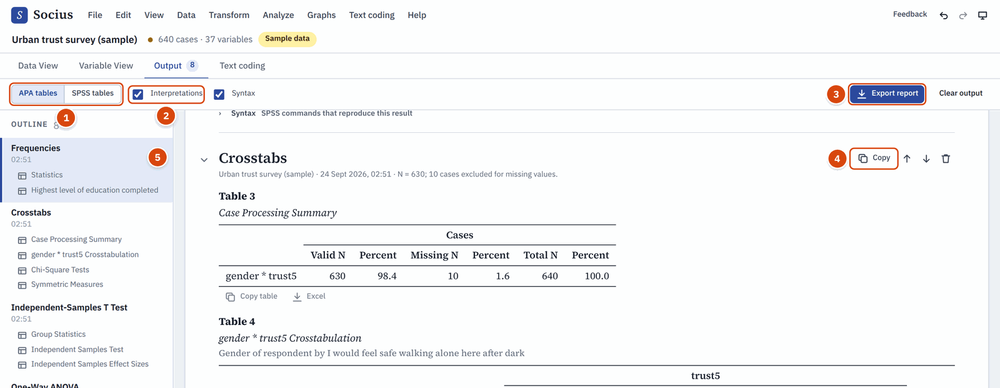
- APA tables / SPSS tables switches the table style.
- Interpretations and Syntax show or hide the plain-language boxes and the SPSS commands.
- Export report saves all the output in one file.
- Copy at the top right of each result copies that result. Next to it, Explain with AI asks the optional AI help to explain the result (see Explain a result).
- The Outline lists every result, so you can jump between them.
APA style or SPSS style
APA tables have horizontal lines only, a numbered title and an italic heading. This is what most journals and theses expect. SPSS tables look like the SPSS viewer, which helps when you compare your results with SPSS or with a colleague who uses it.
{kind=link}
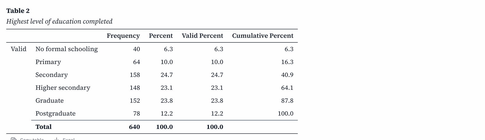
{kind=link}
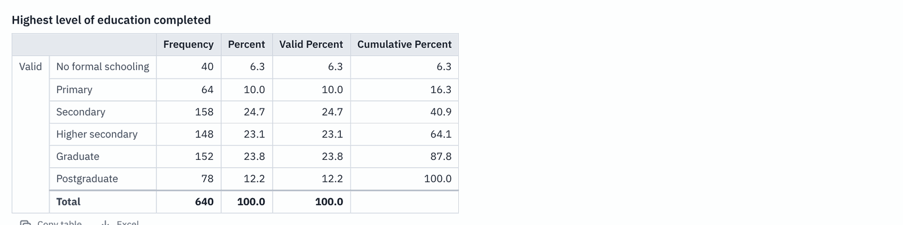
Copy one table into Word
- Choose APA tables at the top of Output.
- Click Copy table under the table you want (or Copy at the top of a result to copy all of it).
- Paste into Word or Google Docs with Ctrl+V. The table keeps its lines and formatting.
Excel, next to Copy table, saves that one table as a spreadsheet.
Copy the APA sentence
Click Copy in the APA-style report box and paste the sentence into your results section. Treat it as a draft:
- Rewrite long question wording into short concepts your reader knows ("feeling safe after dark").
- Put statistical symbols in italics: t, F, p, M, SD, N, r, d. Socius copies plain text, so italics are lost.
- Add the direction and meaning of the result in your own words.
Export the whole report
Click Export report and choose a format:
- Word (.docx): APA tables and charts, ready to edit. This is the one most people want.
- Web page (.html): a standalone page you can open in any browser and print, or save as PDF from the print dialog.
- Excel (.xlsx): one sheet per table.
- Plain text (.txt): tables as aligned text.
To tidy up before exporting, use the small arrows on each result to move it up or down, and the bin icon to delete it. Clear output removes everything.
Chapter 10Coding open-ended answers
Surveys often end with an open question, such as "What is the biggest challenge facing your neighbourhood today?". Coding means reading each answer and tagging it with one or more themes, called codes. The list of codes, with a definition for each, is your codebook. Once answers are coded, you can count the themes, compare them between groups, and even test the differences with statistics.
Start with the worked example
The quickest way to learn is the worked example. Click the Text coding tab. With the sample survey open, the start screen of Text coding shows a card called Explore a worked example.
Click it. Socius brings in the 630 answers to q_challenge, adds a starter codebook of 15 codes grouped into 4 themes, and codes most answers automatically with keyword rules, so you have something to review. One click on Undo in the Text coding toolbar removes the whole example again.
Import answers from a survey question
For your own data, bring in the answers yourself:
- Choose Text coding then Import open-ended answers from dataset.
- Under Open-ended question (string variable), pick the question, for example
q_challenge. - Under Name responses by (optional), pick an ID such as
resp_id. - Tick the characteristics you want to compare later, such as
gender,city,areaandmigrant. These travel with each answer as attributes. - Click Import 630 answers (the button shows how many answers will come in).
{kind=link}
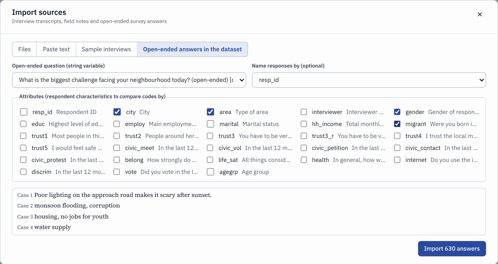
The Responses view
The answers appear in the Responses view of the Text coding tab.
{kind=link}
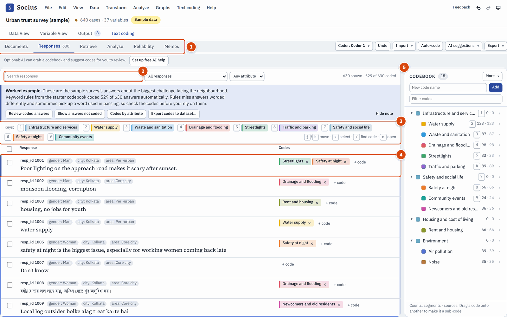
- Views. Switch between Documents, Responses, Retrieve, Analyse, Reliability and Memos.
- Search and filters. Find answers with a word, show only answers not yet coded, or only one group (for example only women).
- Number keys. The first nine codes get the keys 1 to 9.
- An answer with its attributes and its codes. Click + code to add a code with the mouse, or the small cross on a code to remove it.
- Codebook. Your codes, grouped under themes, with how many passages and sources each has.
Build a codebook
To add a code, type its name in New code name at the top of the Codebook panel and click Add. Start with a handful of codes from reading 30 or 40 answers; you can add more as you go.
Good codes have clear definitions. Open a code's menu (the small arrow at the right of its row) and choose Edit definition and rules.
{kind=link}
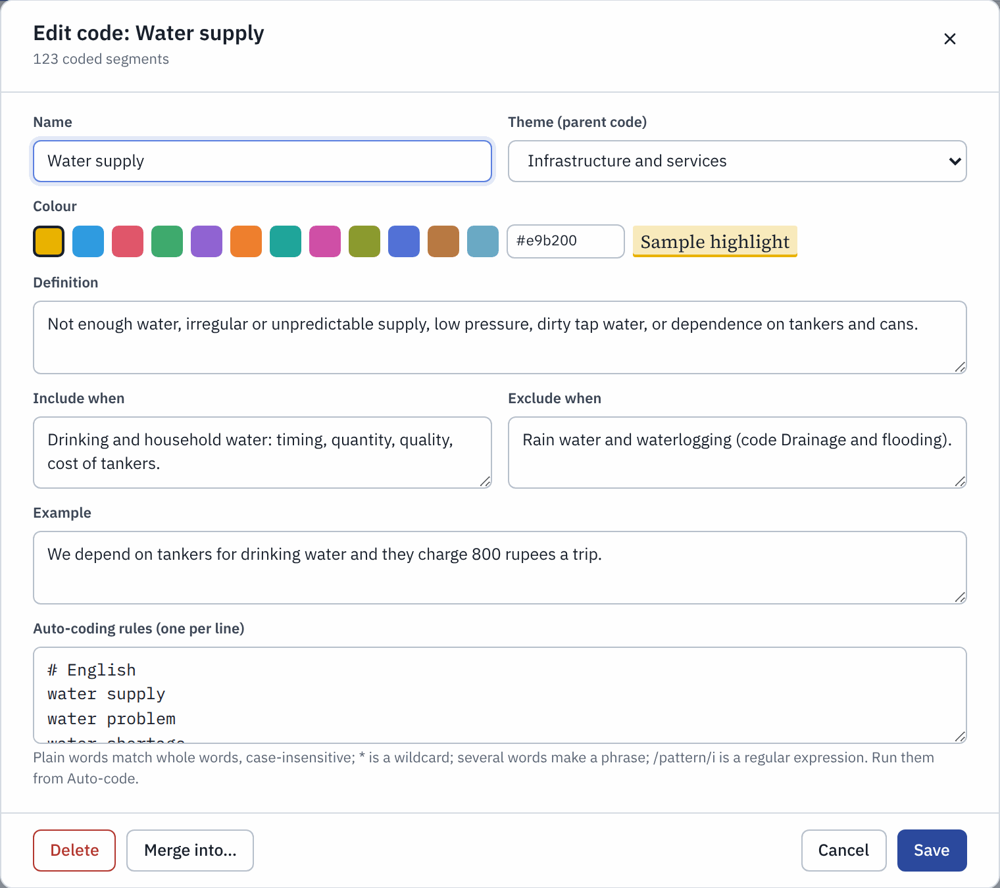
- Theme (parent code) groups codes into a hierarchy, such as "Water supply" under "Infrastructure and services".
- Definition, Include when, Exclude when and Example keep your coding consistent over weeks, and they are exactly what a second coder needs.
Code with the number keys
Coding by keyboard is fast. Click in the list of answers, then:
| Key | What it does |
|---|---|
| j or ↓ | Next answer |
| k or ↑ | Previous answer |
| 1 to 9 | Apply that code; press again to remove it |
| / | Find any code by name, or create a new one |
| x or Space | Select an answer (to code several at once) |
| o or Enter | Open the answer to code only part of it |
An answer can have several codes. The counter at the top right shows how many answers you have coded so far.
Auto-code with keyword rules
For clear-cut themes, rules save time. Choose Text coding then Auto-code with keyword rules (or the Auto-code button).
{kind=link}
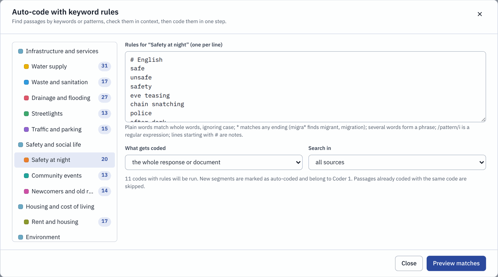
- Pick a code on the left.
- Type its rules on the right, one per line. A plain word matches that whole word, ignoring capitals.
*matches any ending (flood*finds flood, floods and flooding). Lines starting with#are notes to yourself. - Choose What gets coded (the whole answer, or only the sentence with the match) and Search in.
- Click Preview matches, untick any wrong hits, then click the button to code them.
Turn codes into variables and crosstab them
This is where qualitative and quantitative work meet. Each code can become a 0/1 variable in your dataset (1 = the person mentioned it, 0 = did not).
- Choose Text coding then Export codes to dataset.
- Tick the codes you want. Each gets a variable name starting with
c_, such asc_safety_at_night. - Click Add ... variables.
{kind=link}
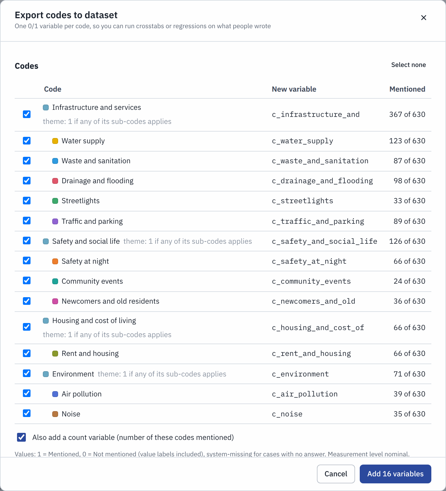
Now run Analyze then Descriptive Statistics then Crosstabs with gender in Row(s) and c_safety_at_night in Column(s):
{kind=link}
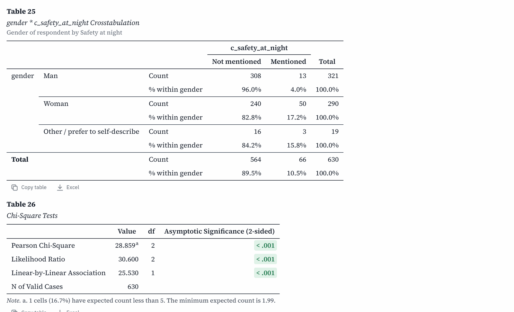
17.2% of women mention safety at night as the biggest challenge, against 4.0% of men, χ²(2, N = 630) = 28.86, p < .001. The answer to an open question has become a testable finding.
To compare codes between groups without leaving Text coding, open the Analyse view and choose Codes by attribute:
{kind=link}
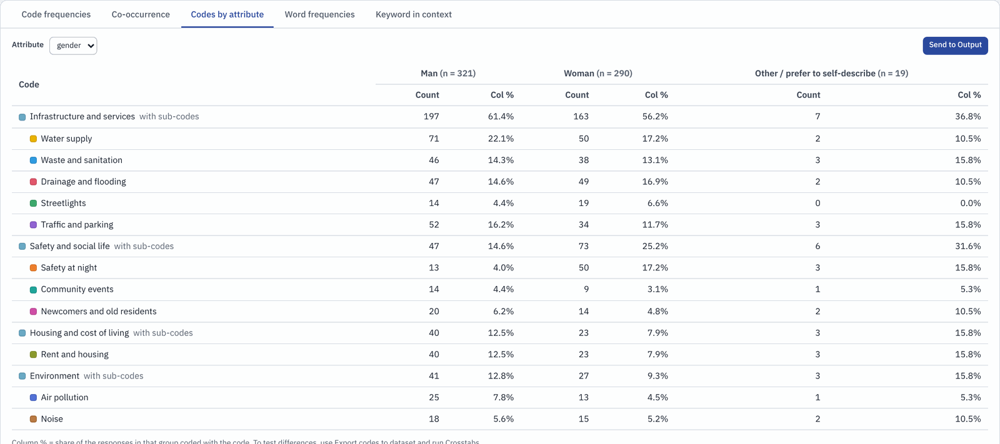
Chapter 11Coding interviews
Interview transcripts are coded in the Documents view. You highlight a passage and attach one or more codes to it.
Import a transcript
Choose Text coding then Import documents. Drop your files on the dialog, or click to choose them.
- Word (.docx) and plain text (.txt, .md) files: one document per file.
- Paste text lets you paste a transcript directly.
- To practise, choose Text coding then Load sample interviews. It adds three fictional interviews from Kolkata, Bengaluru and Delhi.
Highlight and code a passage
- Open the Documents view and click an interview in the Sources panel on the left.
- Select a passage with the mouse, as you would to copy it.
- A small box appears. Type the name of a code. Press Enter to apply an existing code, or choose Create code to add a new one on the spot.
{kind=link}
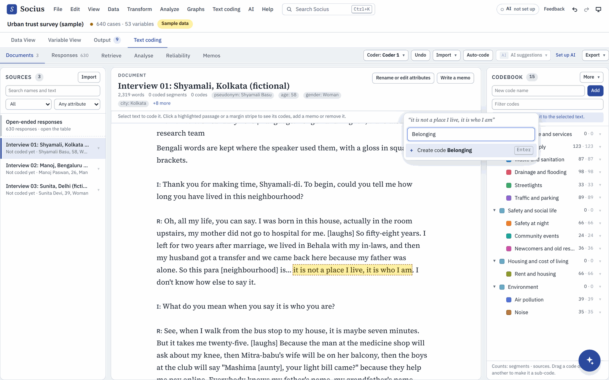
Coded passages are highlighted in the code's colour, with a stripe in the margin. A passage can have several codes, and codes can overlap.
{kind=link}
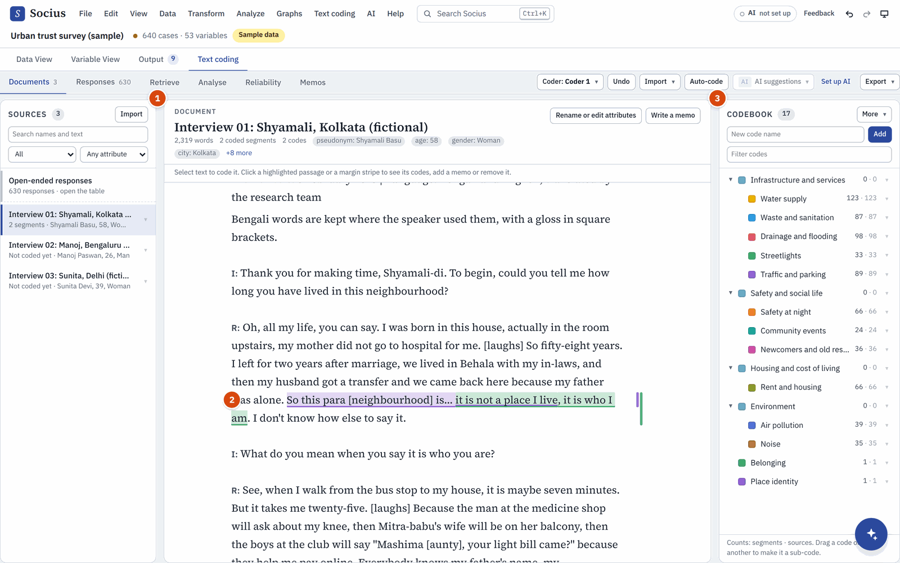
Write memos
Memos are your analytic notes. There are two kinds:
- A memo on a passage. Click a highlighted passage. A panel shows its codes, with a box for a memo on each.
- A memo on the project or a code. Open the Memos view and click New memo, or choose Write a memo on this code from a code's menu.
{kind=link}
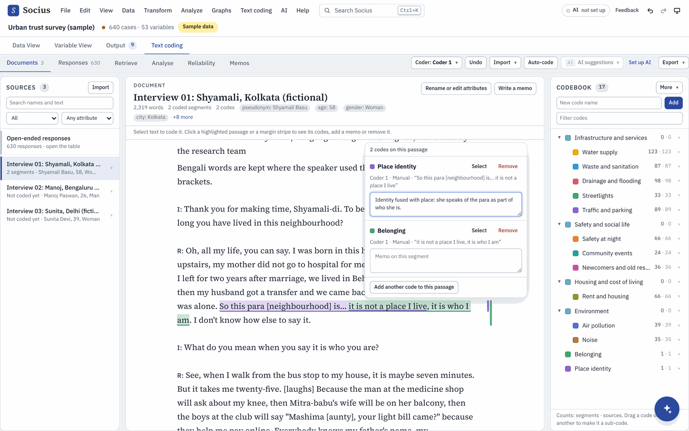
Retrieve quotes
The Retrieve view collects every passage with a given code, across all your documents and answers, with the speaker's attributes. Pick a code at the top.
{kind=link}
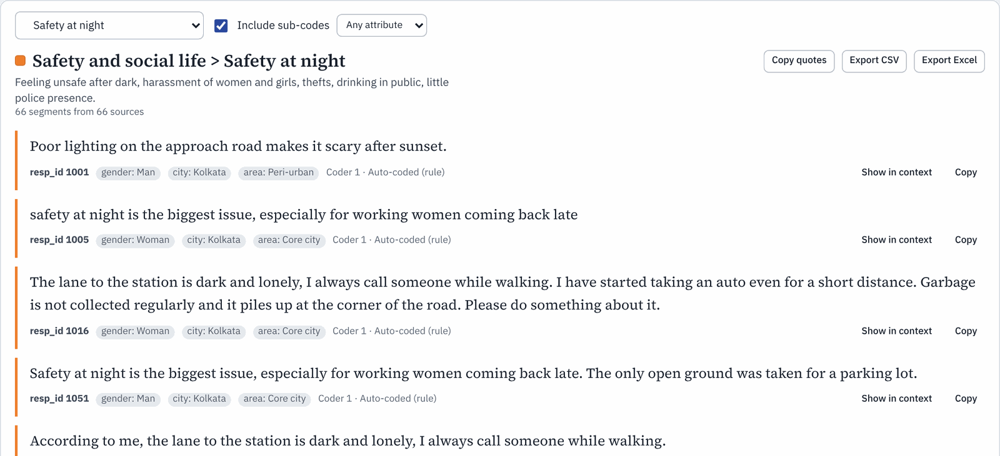
- Copy quotes copies them with their sources, ready for your write-up.
- Show in context jumps to the passage in its document.
- Export CSV and Export Excel save them as a table.
For a report of the whole codebook with counts and example quotes, choose Text coding then Qualitative report.
Intercoder reliability: do two coders agree?
To show that your coding is trustworthy, a second person codes the same material independently, and you measure how often you agree.
- Agree on the codebook with written definitions first.
- Choose Text coding then Coders (or Coder then Manage coders in the toolbar). Add the second coder, for example "Priya", and click Code as Priya.
- Priya codes the same answers or documents. While she codes, she does not see the first coder's codes, so her coding stays independent.
- If you work on different computers, one person saves the project (File then Save project) and sends the
.socius.jsonfile to the other, who opens it, codes, and saves it again. - Open the Reliability view and choose Coder A and Coder B.
{kind=link}
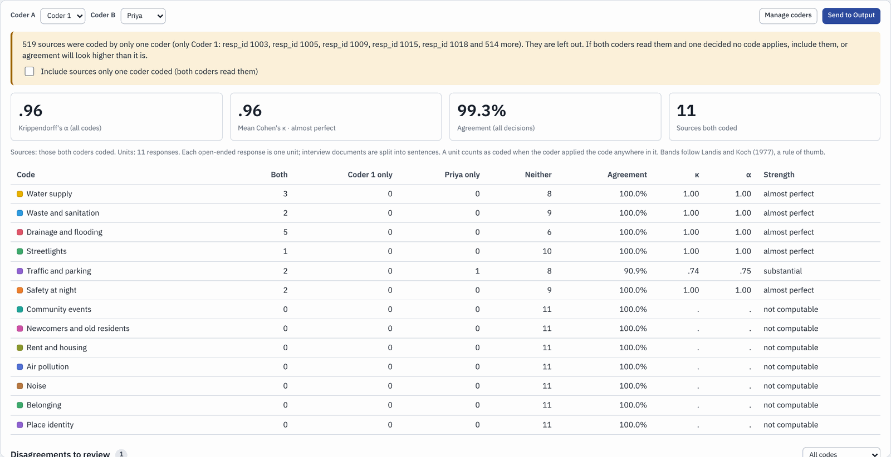
How to read it.
- Agreement is the share of decisions on which both coders agree. It looks high even by chance, because both coders leave most codes off most answers.
- Cohen's κ (kappa) and Krippendorff's α (alpha) correct for agreement by chance. For published work, .70 to .80 or higher is usually expected. The Strength column gives a verbal label ("substantial", "almost perfect").
- Disagreements to review, further down, lists the answers where you differ. Discuss them, sharpen the code definitions, and code a fresh sample if needed.
Chapter 12Getting help from AI
Socius can ask an AI model to help you. Once it is set up, AI can:
- answer your questions about your data and methods, and run the analysis for you (the Socius assistant);
- explain a result in plain language, with what to watch out for and how to report it;
- help with text coding: suggest a codebook, suggest codes for open-ended answers and summarise a code.
AI help is optional and free. It is switched off until you set it up, and everything else in Socius works without it. Setting it up takes about two minutes.
Set it up
- Choose AI then AI assistant settings (the same item is under Help then AI assistant settings). You can also click the AI chip at the top right and then Set up AI help.
- Under Where should the AI run?, choose one of the two free options below.
- Follow the steps for that option, then click Test connection.
{kind=link}
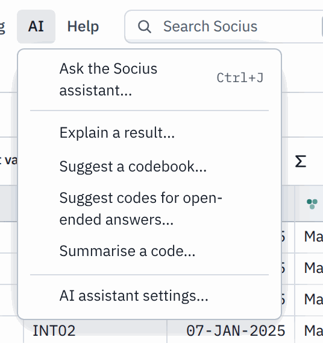
Option 1: Google Gemini with your own free key (recommended)
Google Gemini is fast and gives good answers. You need a free "API key" from Google: a long password that lets Socius use Gemini on your behalf. You only need a Google account (for example a Gmail address).
- In the settings, choose Google Gemini (1).
- Click the link Google AI Studio (2), or go to aistudio.google.com/apikey. Sign in with your Google account.
- Click Create API key. Accept the terms if Google asks.
- Copy the key. It starts with "AIza".
- Back in Socius, paste it into API key (3).
- Leave Model (4) empty. Socius then picks the newest free Gemini model your key can use, and keeps doing so when Google retires old models.
- Click Test connection (5).
{kind=link}
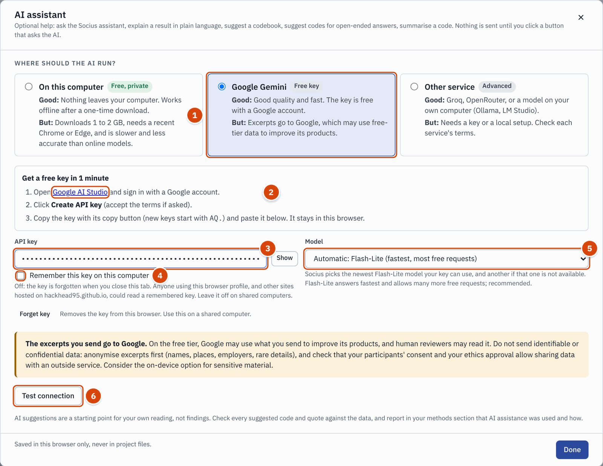
The key is stored in this browser only. It never goes into project files or exports. On a shared computer, click Forget key when you are done.
Option 2: On this computer (private)
A small AI model runs inside your browser, on your computer's graphics chip. Nothing leaves your computer, and after a one-time download of 1 to 2 GB it even works offline. This is the right choice for confidential interviews.
- In the settings, choose On this computer.
- Socius checks whether your browser can run the model. It needs a recent Chrome or Edge on a desktop or laptop.
- Pick a model and click Download model. You can also skip this: the first AI request downloads it.
- Click Test connection.
The on-device model is slower and less accurate than Gemini. It is fine for explaining a result or suggesting codes, but it is noticeably weaker as the Socius assistant.
"AI is ready. Try it"
When the test works, the settings say "Connected" and a green panel appears.
{kind=link}
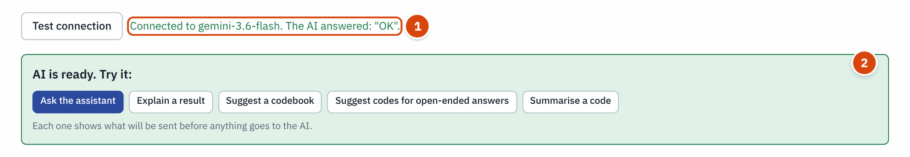
Click one of the buttons to try a feature straight away, or click Done. The AI chip in the top bar now shows a green dot and the service, for example "AI Gemini".
Before you send anything
Every AI feature says what it will send, and to whom, before you click. Nothing is sent until you do.
Where to find AI in Socius
The AI menu in the menu bar lists everything AI can do:
| Menu item | What it does |
|---|---|
| Ask the Socius assistant | Opens the assistant, where you can ask questions in your own words (Ctrl+J). |
| Explain a result | Explains one result from Output in plain language. With several results, you choose which one. |
| Suggest a codebook | Reads a sample of your interviews or open-ended answers and proposes codes with definitions and example quotes. |
| Suggest codes for open-ended answers | Applies your codebook to survey answers and suggests codes for each answer, which you accept or reject. |
| Summarise a code | Drafts a short summary of the passages coded with one code. |
| AI assistant settings | Set-up, as described above. |
If something is missing, the menu tells you what to do first. For example, Explain a result with no results yet says Run an analysis first and offers a button Open Crosstabs. If AI is not set up, any item opens the settings and explains what that feature will do.
The AI chip at the top right shows the status of AI help. Click it to see the same features, each with a one-line description.
{kind=link}
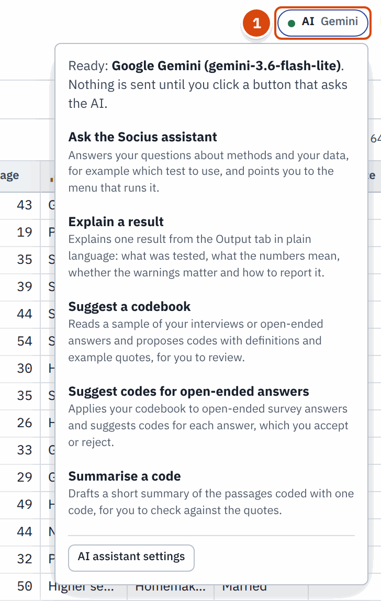
You also find AI in three other places: the Assistant button at the bottom right of every screen, the Explain with AI button on every result in Output, and AI suggestions in the Text coding toolbar. All three are described below.
Explain a result
Every result in Output has an Explain with AI button. It asks the AI to explain the result as a patient statistics tutor would: what was tested, what the numbers mean, whether the warnings matter and how to report it.
Try it with the crosstab from Crosstabs with chi-square (gender by trust5):
- Run the crosstab, or scroll to it in Output.
- Click Explain with AI at the top right of the result, next to Copy (see the picture below).
- A panel opens under the result. It says what will be sent and to whom (1 in the second picture). Click What will be sent (2) to read the exact text. The tables, Socius's summary, the APA sentence and the warnings are sent; individual answers are not.
- Click Explain (3).
{kind=link}
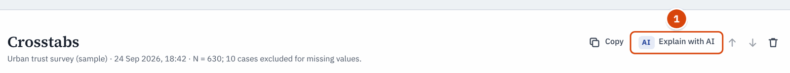
{kind=link}
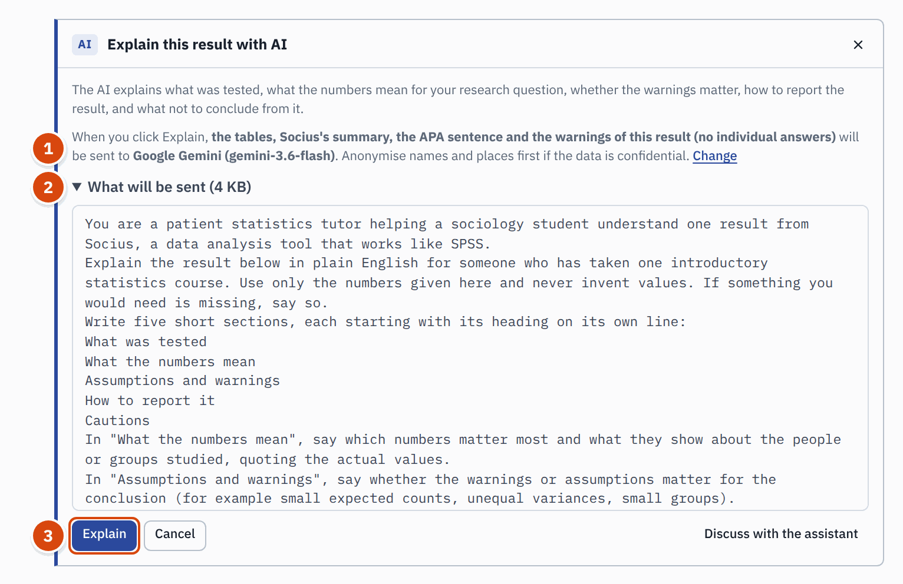
The explanation appears under five headings: What was tested, What the numbers mean, Assumptions and warnings, How to report it and Cautions.
{kind=link}
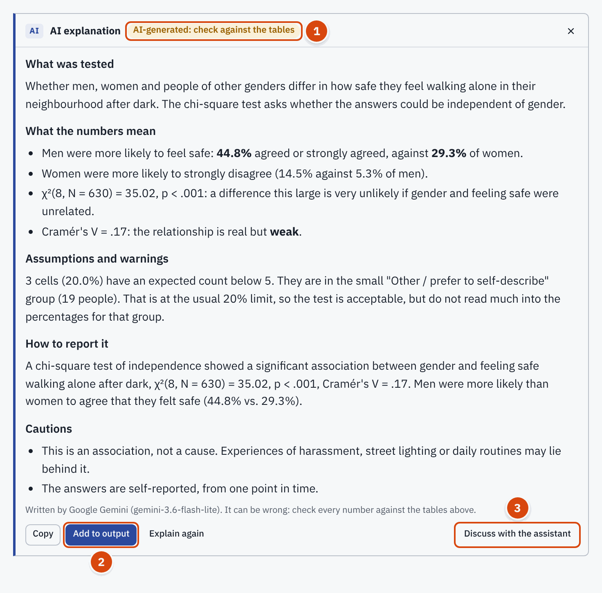
- Add to output (2) attaches the explanation to the result as a note marked AI-GENERATED. It is exported with your report like any note.
- Copy copies the text; Explain again asks for a new version.
- Discuss with the assistant (3) opens the Socius assistant with this result attached, so you can ask follow-up questions such as "What does Cramér's V mean here?".
The Socius assistant
The assistant is a chat panel where you ask questions in your own words, as you would ask a helpful methods tutor. It can look at your dataset, run analyses on it, read your results, prepare recodes and scales, and answer "how do I" questions from this guide.
Open it
- Click the round blue Assistant button at the bottom right of any screen (number 9 in the tour).
- Or press Ctrl+J (Cmd+J on a Mac). Press it again to close the panel.
- Or choose AI then Ask the Socius assistant, or type a question in Search and choose Ask the assistant.
The panel opens on the right. Drag its left edge to make it wider. Close it with the cross at the top right or Esc. Your conversation stays while Socius is open, even when you switch tabs; reloading the page clears it.
{kind=link}
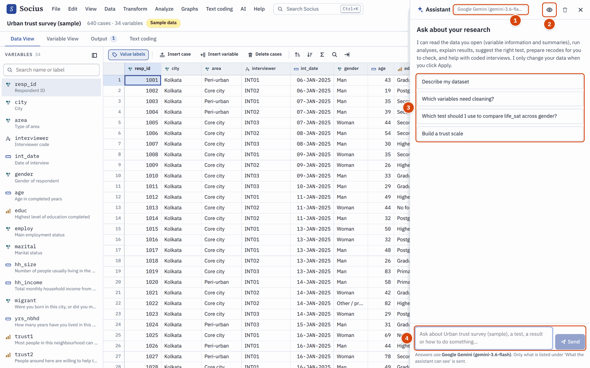
When the conversation is empty, the assistant suggests questions (3) that fit your data and the tab you are on. Click one to send it, or type your own question in the box (4) and press Enter. Shift+Enter starts a new line.
What it can see
Click the eye button (2) to see and change what the assistant may send to the AI service.
{kind=link}
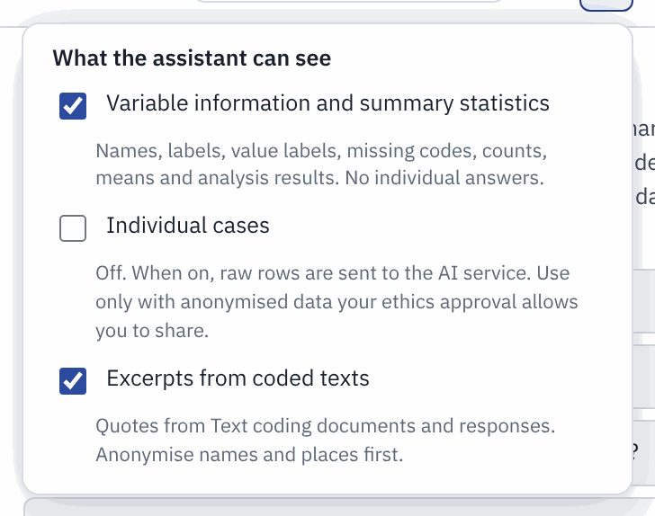
- Variable information and summary statistics (on): names, labels, value labels, missing codes, counts, means and analysis results. No individual answers.
- Individual cases (off): the raw rows of your data, up to 30 at a time. Switch this on only for anonymised data that your ethics approval lets you share. It switches off again every time you reload the page.
- Excerpts from coded texts (on): quotes from your Text coding documents and answers. Anonymise names and places first.
The line at the bottom of the panel always says which AI service answers, and that only what is listed here is sent.
Good first questions
With the sample survey open, try:
- "Describe my dataset"
- "Which test should I use to compare life satisfaction between migrants and non-migrants?"
- "Is trust in neighbours related to gender?"
- "Help me build a trust scale"
- "How do I export my results to Word?"
Ask one thing at a time and use your own words; you do not need variable names. You can ask follow-up questions ("Why not ANOVA?", "How do I report that?").
What it does with your question
The assistant does not guess. It checks your variables, runs the analysis in Socius on your data and reads the real tables before it answers.
{kind=link}
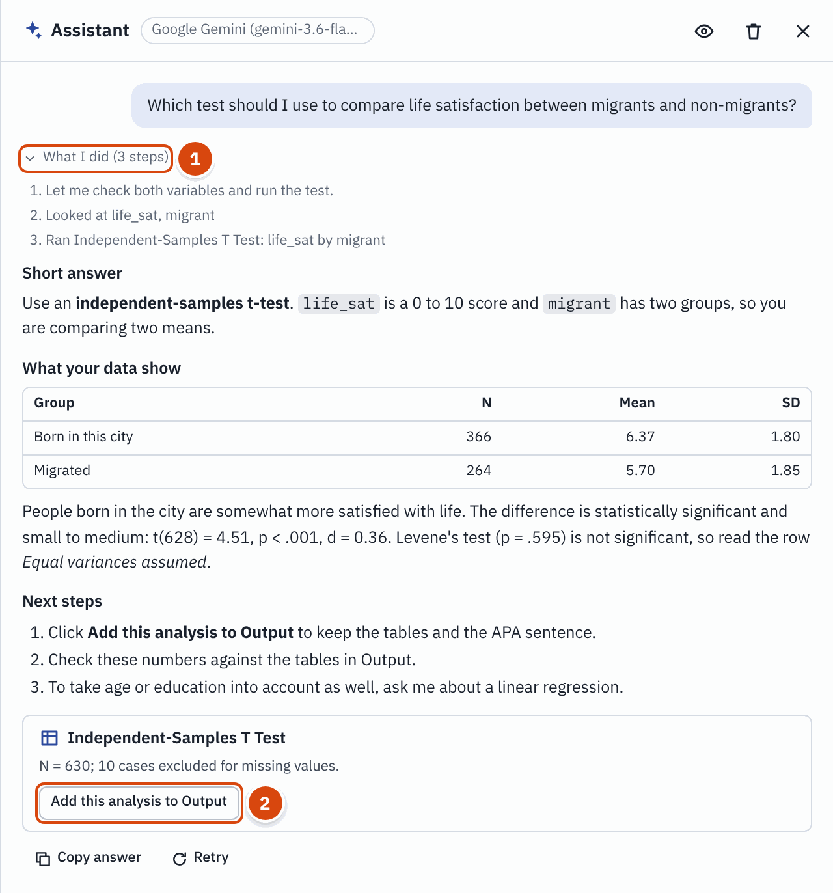
- What I did (1) lists every step it took, such as "Looked at life_sat, migrant" and "Ran Independent-Samples T Test: life_sat by migrant". Click it to see the steps.
- The answer quotes the real numbers, here t(628) = 4.51, p < .001, d = 0.36, the same as in Comparing two groups.
- An analysis the assistant runs is not added to Output by itself. Click Add this analysis to Output (2) to keep it.
- Some answers end with Open dialog, which opens the analysis dialog with the variables filled in. Check them and click Run.
When a question needs new variables, the assistant prepares the change and shows it to you first.
{kind=link}
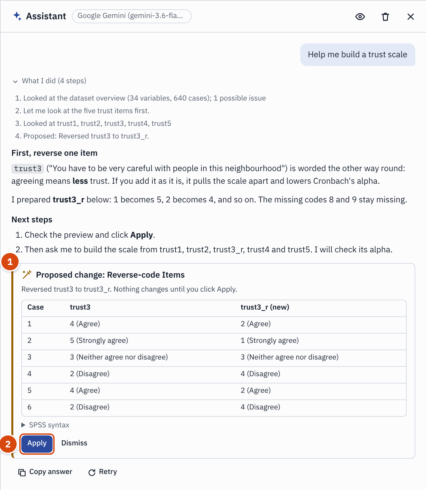
A Proposed change card (1) describes the recode, reverse-coding, scale or computed variable, shows the first cases before and after, and gives the SPSS syntax. Nothing changes until you click Apply (2); Dismiss throws the proposal away. After Apply, the change is logged in Output like any Transform command, and Edit then Undo reverses it. The assistant only creates new variables; it never overwrites your data.
Know its limits
- It can be wrong. It may misread a table, pick an unsuitable test or phrase a finding too strongly. Check its numbers against the tables in Output, and think about whether its advice fits your research question.
- Free tiers have limits. Google's free tier allows only a few requests a minute and a daily allowance. The assistant paces itself, so a complex question can take 20 to 60 seconds. If you see "Too many AI requests at once, or the free allowance is used up for now", wait a minute (or until the next day) and click Retry.
- The on-device model is weaker. On this computer, the assistant works with a small model: slower, with fewer tools and simpler answers. For the assistant, Gemini works much better. Use anonymised data with it.
- It cannot replace your judgement or your supervisor. It is a tutor at your side, not an authority.
AI in Text coding
In the Text coding tab, the AI suggestions button in the toolbar has three helpers. If AI is not set up, the button is greyed out and a Set up AI link sits next to it.
{kind=link}
- Suggest a codebook reads a sample of your documents or answers and proposes codes, each with a definition and an example quote. Keep the ones you want and click Add (the button shows how many codes). Treat them as a first draft: rename, merge and define them in your own terms.
- Suggest codes for responses applies your existing codebook to open-ended answers and suggests codes for each one. You Accept or Reject every suggestion, or Accept all. Accepted codes are marked as AI suggestions, so you can review them later.
- Summarise a code opens the Retrieve view. Pick a code and click Summarise this code for a short summary of its passages. Save as memo keeps it as a memo on the code. Check it against the quotes.
Each dialog says how many excerpts will be sent, and to whom, before you click. For intercoder reliability, AI suggestions do not count as a second coder: a person must code independently.
Reporting AI use
If AI helped with your analysis, say so in your methods section, as you would for any software. Name the tool and the model, say what it did and how you checked it. For example:
Follow your university's and your journal's rules on AI, which differ and change often. Keep a note of what you used AI for while you work; it is much harder to remember afterwards.
Chapter 13Saving and sharing your work
Save a project
A project file keeps everything together: the data (including the variables you created), all your output and the text coding. Choose File then Save project (or press Ctrl+S). Socius saves one file ending in .socius.json to your downloads folder.
{kind=link}
To continue later, on this or any other computer, choose File then Open project and pick the file. File then Recent projects lists projects you saved or opened in this browser.
Save your data for SPSS, Excel or R
File then Save data as writes your data in other formats:
- SPSS data (.sav): opens in SPSS with all labels, value labels and missing values, including the variables you created in Socius. SPSS compressed (.zsav) is a smaller file for SPSS 21 or later.
- CSV with codes or CSV with value labels: plain text that almost any program reads, including R and Stata.
- Excel with codes or Excel with value labels: a spreadsheet.
File then Export codebook saves a list of all variables with their labels, value labels and missing values, handy for a thesis appendix.
Share with a colleague
Send your colleague the .socius.json project file (by email or a shared drive). They open Socius and choose File then Open project. If they use SPSS, send the .sav file instead. Under every result in Output, the Syntax section holds the SPSS commands that reproduce it.
Chapter 14Troubleshooting and FAQ
My file will not open. Socius opens .sav, .zsav, .csv, .tsv, .txt and .xlsx files. For other formats:
- Old Excel files (
.xls): open in Excel and save as.xlsxor CSV. - SPSS portable files (
.por): open in SPSS or PSPP and save as.sav. - Stata, SAS or R files: export them as CSV, or save as
.sav(in R,haven::write_sav()). - SPSS output (
.spv) and syntax (.sps) files are not data. Open the.savfile instead. - Zipped files: unzip first.
Letters look wrong (strange symbols instead of Hindi, Bengali or accented letters). This is a text encoding problem. For a CSV file, choose another Character encoding in the preview. In Excel, saving as "CSV UTF-8" avoids the problem. Recent SPSS files open correctly; for a very old one, open and save it again in a recent SPSS.
My results differ from SPSS. Check that the same codes are declared missing (Variable View, Missing column), and that the same weight and filter are on. The line under each result title says how many cases were used and whether they were weighted.
A dialog warns that a variable has the wrong measurement level. It is a warning, not a block. Often the fix is to set the right level in the Measure column of Variable View.
I made a mistake. Edit then Undo (Ctrl+Z) reverses changes to the data one step at a time, and Edit then Redo (Ctrl+Y) brings them back. Text coding has its own Undo button in its toolbar.
I lost my work after clearing the browser. Clearing browsing data, a private window, or another browser or computer loses the autosaved session. Only a saved project file is safe. Save one regularly with File then Save project.
Where is my data stored? Only in your browser, on your computer. Files you open are never uploaded. The only things that can leave your computer are what you choose to send with the optional online AI help (see Before you send anything).
I set up AI but I don't see a way to use it. Use the AI menu in the menu bar, the Assistant button at the bottom right (or Ctrl+J), Explain with AI on any result in Output, or AI suggestions in the Text coding toolbar. The AI chip at the top right lists every AI feature. See Where to find AI in Socius.
Test connection fails. Read the red message next to the button; it says what went wrong.
- "The AI service did not accept the key": copy the key again from Google AI Studio, including every character and no spaces, and paste it into API key. If it still fails, create a new key.
- "The AI service did not recognise the model name": empty the Model box, so that Socius picks the model for you.
- "Could not reach the AI service": check your internet connection. Some university or office networks block AI services; try another network.
- Google AI Studio is not available in every country and asks you to be 18 or older. If you cannot create a key, use On this computer instead.
The AI says the free allowance is used up ("rate limit"). Free tiers allow only a few requests a minute and a limited number a day. Wait a minute and click Retry (or Try again). If it keeps happening, try again the next day, send fewer excerpts at a time, or switch to On this computer.
"This browser cannot run the on-device model" (no WebGPU). The on-device model needs WebGPU, which only recent Chrome and Edge on a desktop or laptop offer reliably. Update your browser, or use another computer. Check that hardware acceleration is on (Chrome: Settings > System). Otherwise use Google Gemini with anonymised data.
AI buttons are greyed out. In Text coding, a grey AI suggestions button means AI help is not set up: click Set up AI next to it. If AI is set up but a single item is grey, it has nothing to work on yet: Suggest a codebook needs imported texts, Suggest codes for responses needs imported answers and at least one code, and Summarise a code needs coded passages. The Explain button in the Explain panel stays grey until AI help is set up.
The assistant's numbers differ from Output. Trust the tables in Output. The assistant runs the same analyses, but it can misread or round them. Run the analysis from the menu (or click Add this analysis to Output) and report the numbers from Output.
Can I use Socius on a phone? Yes, for looking at data and results. For coding and analysis, a computer with a mouse and keyboard is much easier.
Where are the keyboard shortcuts? Help then Keyboard shortcuts lists them all. The two most useful are Ctrl+K for Search and Ctrl+J for the assistant. Help then Getting started gives a six-step overview.
Chapter 15Giving feedback
Socius is young, and your experience helps make it better. If something does not work, confuses you, or you miss a feature, please tell us.
Choose Help then Send feedback or report a problem, or click Feedback at the top right of the screen. A form opens on GitHub in a new tab. You can also go there directly: https://github.com/hackhead95/socius/issues/new/choose
{kind=link}
- Posting on GitHub needs a free GitHub account. Creating one takes a minute.
- Say what you did, what you expected and what happened instead. A screenshot helps.
- Never attach confidential data. If a problem only happens with your file, describe the file (for example "an SPSS file with 300 variables from 2012") instead of sending it.
Thank you for trying Socius.
Appendix AQuick reference card
| I want to... | Where to find it |
|---|---|
| Find any command, variable or result | Search box at the top, or Ctrl+K |
| Open an SPSS, CSV or Excel file | File then Open data file |
| See labels, missing values, measure | Variable View tab |
| Show labels instead of codes in the data | View then Value labels in Data View |
| Copy labels to other variables | Data then Copy variable properties |
| Group ages or incomes | Transform then Recode into different variables |
| Flip a negatively worded item | Transform then Reverse-code items |
| Build a scale with Cronbach's alpha | Transform then Create scale / index |
| Compute a new variable with a formula | Transform then Compute variable |
| Analyse only some cases | Data then Select cases |
| Use a survey weight | Data then Weight cases |
| Count answers | Analyze then Descriptive Statistics then Frequencies |
| Mean, SD, minimum, maximum | Analyze then Descriptive Statistics then Descriptives |
| Relate two categorical variables | Analyze then Descriptive Statistics then Crosstabs |
| Compare two group means | Analyze then Compare Means then Independent-Samples T Test |
| Compare three or more group means | Analyze then Compare Means then One-Way ANOVA |
| Correlate scale variables | Analyze then Correlate then Bivariate Correlations |
| Predict a scale outcome | Analyze then Regression then Linear Regression |
| Predict a yes/no outcome | Analyze then Regression then Binary Logistic Regression |
| Check a scale's reliability | Analyze then Scale then Reliability Analysis |
| Make a bar chart or histogram | Graphs then Bar Chart, Graphs then Histogram |
| Copy a table into Word | Copy table under the table in Output |
| Export all results to Word | Export report then Word (.docx) in Output |
| Code open-ended answers | Text coding then Import open-ended answers from dataset |
| Import interview transcripts | Text coding then Import documents |
| Auto-code with keywords | Text coding then Auto-code with keyword rules |
| Turn codes into variables | Text coding then Export codes to dataset |
| Check agreement between coders | Text coding then Intercoder reliability |
| Set up AI help | AI then AI assistant settings |
| Ask a question about my data or methods | Assistant button (bottom right), or Ctrl+J |
| Explain a result in plain language | Explain with AI on the result in Output |
| Save everything | File then Save project (Ctrl+S) |
| Save data for SPSS | File then Save data as then SPSS data (.sav) |
| Undo | Edit then Undo (Ctrl+Z) |
| Report a problem | Help then Send feedback or report a problem |
Appendix BGlossary
| Term | Meaning |
|---|---|
| Case | One row of data, usually one respondent. |
| Variable | One column of data, usually one question. |
| Value label | The words behind a code, such as 2 = Woman. |
| Missing value | A code that means "no real answer", such as 9 = Refused. Left out of statistics. |
| Nominal, ordinal, scale | Measurement levels: unordered categories; ordered categories; real numbers. |
| p-value | The probability of a result at least this strong if there were really no relationship. Below .05 is usually called statistically significant. It says nothing about how big or important an effect is. |
| Statistically significant | Unlikely to be due to chance alone (usually p < .05). |
| Chi-square (χ²) | A test of whether two categorical variables are related, used with crosstabs. |
| Cramér's V | The strength of a relationship in a crosstab, from 0 (none) to 1 (perfect). About .10 is weak, .30 moderate, .50 strong. |
| Mean (M) and standard deviation (SD) | The average, and how far values typically lie from it. |
| t-test | A test of whether the means of two groups differ. |
| ANOVA | Analysis of variance: a test of whether the means of three or more groups differ. |
| Effect size | How big a difference or relationship is, regardless of sample size. Examples: Cohen's d, eta squared (η²), Cramér's V, r. |
| Cohen's d | The difference between two means in standard deviation units. About 0.2 is small, 0.5 medium, 0.8 large. |
| Correlation (r) | How closely two variables move together, from -1 to +1. About .10 is weak, .30 moderate, .50 strong. |
| Regression coefficient (B) | How much the outcome changes for a one-unit increase in a predictor, holding other predictors constant. |
| R squared (R²) | The share of the differences in an outcome that a regression model explains. |
| Cronbach's alpha | How consistently a set of items measures the same thing, from 0 to 1. .70 or higher is usually acceptable. |
| Degrees of freedom (df) | A number based on sample size and groups that is reported with a test statistic, as in t(628). |
| Code | A label for a theme that you attach to a passage of text. |
| Codebook | The list of your codes with a definition, inclusion and exclusion rules and an example for each. |
| Theme | A group of related codes (a parent code). |
| Memo | Your analytic note on a passage, a code or the project. |
| Intercoder reliability | How far two coders who code the same material independently agree, beyond chance. Measured with Cohen's kappa (κ) or Krippendorff's alpha (α); .70 to .80 or higher is usually expected. |
| APA style | The reporting style of the American Psychological Association (7th edition), used by many social science journals. |
| Syntax | The SPSS commands that reproduce a result. Socius shows them under each result. |
| AI model | A computer program trained on large amounts of text that writes answers in ordinary language. It can be wrong, so check what it says. |
| API key | A long password from an AI provider, such as Google, that lets Socius use its AI model on your behalf. Keep it private. |
| Socius assistant | The chat panel (Ctrl+J) where an AI model answers your questions, using Socius to look at your data and run analyses. |
| Search | The box at the top (Ctrl+K) that finds commands, variables, results and help pages. |